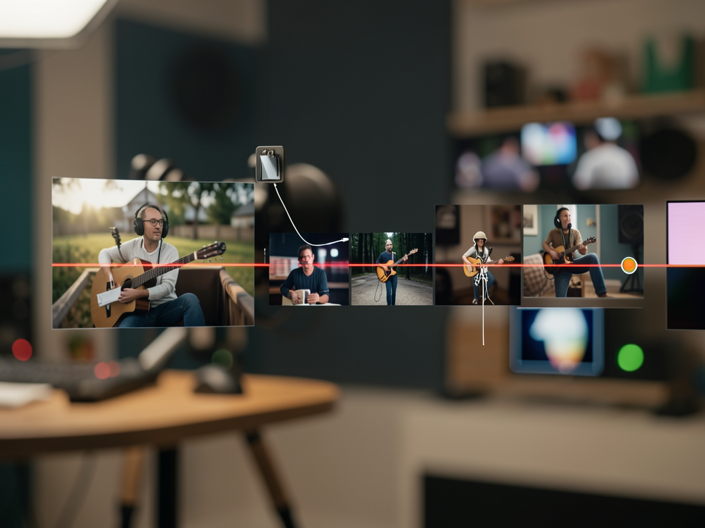
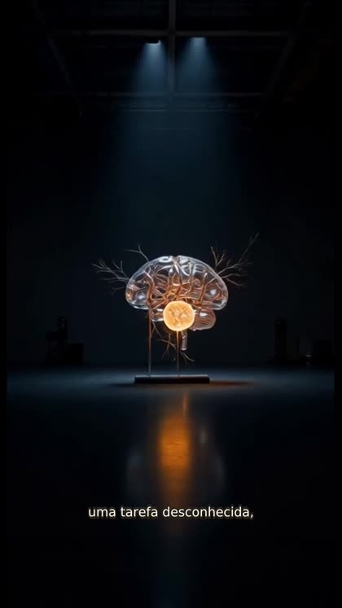
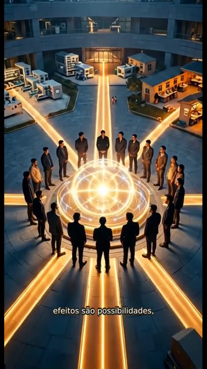

Crie roteiro, voz, imagens, animações, legendas e MP4 em um fluxo visual que permite revisar cada etapa.

VideoSub transforma um tema curto ou conteúdo completo em vídeo vertical, quadrado ou horizontal, mantendo o operador no controle do resultado.
Roteiro, voz, imagem, movimento, legenda e render aparecem separadamente para revisão.
Codex OAuth cria o roteiro, ElevenLabs produz a voz e Agnes gera imagens e vídeos.
Interface e API rodam na máquina, com SQLite para projetos e FFmpeg para a montagem final.
Cada saída é preservada no projeto e pode ser revisada antes da próxima operação.
A aplicação usa ferramentas locais e credenciais configuradas em arquivo não versionado.
Node.js 22 ou superior e pnpm 10.
node --version pnpm --version
FFmpeg e FFprobe disponíveis no PATH, incluindo o filtro subtitles.
ffmpeg -version ffprobe -version
Codex autenticado e chaves de Agnes e ElevenLabs no ambiente local.
codex login status # configure apps/server/.env
Os comandos abaixo são os mesmos usados na versão local do projeto.
Na raiz do repositório, instale o workspace.
pnpm install --frozen-lockfileCopie o modelo e preencha as credenciais sem versionar o arquivo.
cp .env.example apps/server/.env nano apps/server/.env
O script cria o build quando necessário e publica a interface na porta 3333.
pnpm build ./start.sh # abra http://localhost:3333
Informe o tema ou conteúdo, escolha formato e estilo e gere o roteiro.
Tema: explique o que é AGI Formato: 9:16 Estilo: editorial cinematográfico
Gere voz, imagens e animações; revise as cenas e só depois crie legendas e renderize.
# fluxo na interface
Roteiro → Voz → Imagens → Animar → Legendas → RenderizarUse os scripts operacionais incluídos no repositório.
./atualiza.sh # valida, compila e reinicia ./stop.sh # encerra o servidor
Quadros do resultado validado ponta a ponta com voz ElevenLabs, imagens e movimento Agnes e montagem local.


A base atual prioriza produção real e validação local; as próximas fases ampliam operação e acabamento.